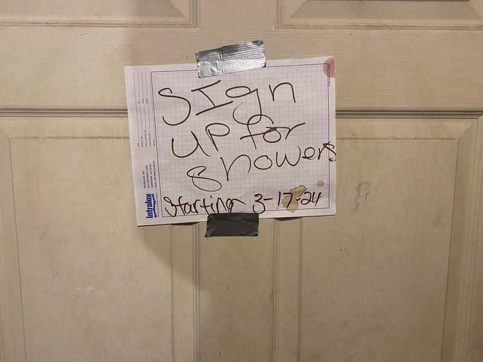

Mobile uploads
This is a sign Misty put up yesterday.
Misty is a homeless person who comes to our community regularly.
Showers are always an issue because people sometimes stay in there for upwards of an hour.
I rarely create rules in homeless communities I am a part of.
For a long time I let people do any drugs they wanted. I’m a Libertarian Humanist. I strongly believe that if you aren’t hurting other people, how you choose to run your life is none of my business.
The very first board meeting of our new charity, @[100069807557908:2048:Houseless Movement Charity], the 2 other board members (homeless drug users) voted to eliminate the use of meth and fentanyl at our center. They wanted a positive place to spend time.
We now are a 420 friendly center. Very few people have been caught using meth and fentanyl since then. They are required to leave for the rest of the day, if they are.
My experience has always been that the homeless community will naturally create rules based on the experiences of the community.
I really believe in homeless-run centers. There is so much buy-in when you do it this way. Enforcement can be an issue. Sometimes you have really strong people that can do enforcement. Sometimes you need help. Either way, enforcement is a very tricky issue because it often leads to corruption. There become 2 laws: 1 law for the people enforcers like and another law for the people enforcement doesn’t like.